Shattered Lands
Who is too big for the cahulaks is the mod's call: half-giants and anything large or bigger can't be tangled (nor anyone Enlarged, while the spell lasts), nor anything with nothing a rope could hold, nor two the mod keeps from being tangled by name (the Sand Howler and the Strine). Names are the game's own, cut short as the game has them ("Lsr Fire Elem"). A name the game gives more than one kind of creature says, in brackets, where each is met.
People in Shattered Lands
| Figure | Creature | Race | Size | Cahulaks can tangle it |
|---|---|---|---|---|
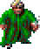 | Announcer | human | M | yes |
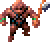 | Arant | human | M | yes |
 | Arant's Guard | human | M | yes |
 | Arena Guard | human | M | yes |
 | Armor Merchant | human | M | yes |
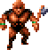 | Army Commander | mul | M | yes |
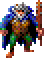 | Balkazar | human | M | yes |
 | Balkazar's Image | human | M | yes |
 | Bowyer | human | M | yes |
 | Caravan Guard | elf | M | yes |
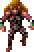 | Caravan Master | elf | M | yes |
 | Castle Guard | human | M | yes |
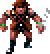 | Chaero | human | M | yes |
 | Chahl | mul | M | yes |
 | Chaya | human | M | yes |
 | Chief Daughter | human | M | yes |
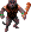 | Churrr | human | M | yes |
 | Council Member | human | M | yes |
 | Dag Prisoner | human | M | yes |
 | Dagger | human | M | yes |
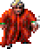 | Dagolar | human | M | yes |
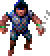 | Dagolar Guard | human | M | yes |
 | Dakaren | human | M | yes |
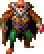 | Defiler | human | M | yes |
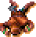 | Delirious Man | human | M | yes |
 | Demothi | human | M | yes |
 | Dinos | human | M | yes |
 | Drajian Guard | human | M | yes |
 | Druid | human | M | yes |
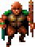 | Druid of Waters | mul | M | yes |
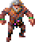 | Egrus | human | M | yes |
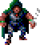 | Elite Guard | human | M | yes |
 | Elven Leader | elf | M | yes |
 | Father Garyn | human | M | yes |
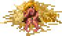 | Gilal | human | M | yes |
 | Gladiator | human | M | yes |
 | Guard (the towns' and camps' guards) | human | M | yes |
 | Guard (the slave pens' half-giants) | half-giant | L | no: too big (a half-giant) |
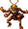 | Guardian | thri-kreen | M ? | yes |
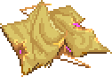 | Hermit | human | M | yes |
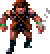 | Hototo | human | M | yes |
 | Jake | human | M | yes |
 | Jark | elf | M | yes |
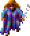 | Jasmine | human | M | yes |
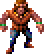 | Kalinin | human | M | yes |
 | Karas | human | M | yes |
 | Kasha | human | M | yes |
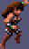 | Katura | human | M | yes |
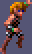 | Kel | elf | M | yes |
 | Keldar | human | M | yes |
 | Krikor | dwarf | M | yes |
 | Kurzak | human | M | yes |
 | Larissa | elf | M | yes |
 | Lazy guard | human | M | yes |
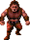 | Legcrusher | half-giant | L | no: too big (a half-giant) |
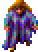 | Linara | human | M | yes |
 | Low Warren Thug | human | M | yes |
 | Loweman | human | M | yes |
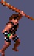 | Lt. Kwerin | human | M | yes |
 | Maris | human | M | yes |
 | Mayor of Gedron | human | M | yes |
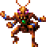 | Mehtar | thri-kreen | M ? | yes |
 | Melkor | human | M | yes |
 | Merzol | human | M | yes |
 | Messenger | human | M | yes |
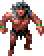 | Mikquetzl | human | M | yes |
 | Mirlon | human | M | yes |
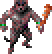 | Mow | human | M | yes |
 | Nnamdi | human | M | yes |
 | Notaku | human | M | yes |
 | Old One Eye | human | M | yes |
 | Prisoner | human | M | yes |
 | Psionicist | human | M | yes |
 | Ranger | human | M | yes |
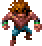 | Renegade | halfling | S | yes |
 | Rogue Shaman | human | M | yes |
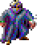 | Sage | human | M | yes |
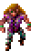 | Saria | elf | M | yes |
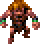 | Saria | halfling | S | yes |
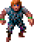 | Scar | human | M | yes |
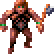 | Scar's henchman | human | M | yes |
 | Semyon | human | M | yes |
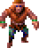 | Seref | elf | M | yes |
 | Serf | human | M | yes |
 | Skull Guardian | human | M | yes |
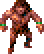 | Slave (the elven slavers' captives, and others) | human | M | yes |
 | Slave Hunter | human | M | yes |
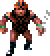 | Slaver Guard | human | M | yes |
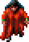 | Tara | human | M | yes |
 | Tari | human | M | yes |
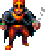 | Templar | human | M | yes |
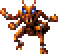 | Thrikreen | thri-kreen | M ? | yes |
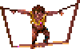 | Tied-up Prisoner | human | M | yes |
 | Tobrian | elf | M | yes |
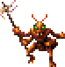 | Tohr-kreen | thri-kreen | M ? | yes |
 | Toonuu | human | M | yes |
 | Troop Leader | human | M | yes |
 | Trustee | human | M | yes |
 | Uskuye | human | M | yes |
 | Uzoma | human | M | yes |
 | Village Hero | human | M | yes |
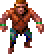 | Villager | human | M | yes |
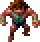 | Visionary | halfling | S | yes |
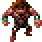 | Visitor | human | M | yes |
 | Visitor | dwarf | M | yes |
 | Warren Chief | human | M | yes |
 | Warrior | human | M | yes |
 | Weapon Merchant | human | M | yes |
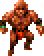 | Wild Mul | mul | M | yes |
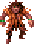 | Wind Druid | human | M | yes |
 | Worshipper | human | M | yes |
 | Wyrmias | human | M | yes |
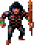 | Wyvern Master | human | M | yes |
 | Zeefram | human | M | yes |
Monsters in Shattered Lands
| Figure | Creature | Size | Cahulaks can tangle it |
|---|---|---|---|
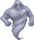 | Air Elemental | L | no: nothing to tangle |
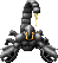 | Alita | L ? | no: too big |
| Animated Statue | L ? | no: too big | |
 | Aposs | M | yes |
| Babau | M | yes | |
| Black Mastyrial | L | no: too big | |
 | Blind One | L | no: too big |
| Blue Slaad | L | no: too big | |
| Bulette | L | no: too big | |
 | Cheee-smak-tunk! | L ? | no: too big |
 | Churr-te-tunk! | L ? | no: too big |
 | Click-tunk! | L ? | no: too big |
| Convert | M | yes | |
 | Cragg | M | no: nothing to tangle |
| Daggoran | L ? | no: too big | |
| Dagolar Slime | M | no: nothing to tangle | |
| Dark Spider | L | no: too big | |
| Djinn | L | no: too big | |
| Drummer | L | no: too big | |
| Dune Reaper | H | no: too big | |
| Dust Devil | M ? | no: nothing to tangle | |
 | Earth Elemental | L | no: nothing to tangle |
| Evard's Tentacle | L ? | no: nothing to tangle | |
| Fire Eel | L ? | no: too big | |
 | Fire Elemental | L | no: nothing to tangle |
| First Folk | S ? | yes | |
| Guard (a magera, at the Silt Sea Summoning) | L | no: too big | |
| Insect Swarm | L ? | no: nothing to tangle | |
| Laussa | M ? | yes | |
 | Lesser Air Eleme | M ? | no: nothing to tangle |
 | Lesser Water Ele | M ? | no: nothing to tangle |
| Lsr Earth Elem | M ? | no: nothing to tangle | |
| Lsr Fire Elem | M ? | no: nothing to tangle | |
 | Magera | L | no: too big |
 | Mastyrial | L | no: too big |
| Mountain Stalker | L ? | no: too big | |
| Otyugh | L | no: too big | |
 | Outcast | M | yes |
| Psurlon | L | no: too big | |
 | Psurlon Adept | L | no: too big |
| Rampager | L ? | no: too big | |
| Red Slaad | L | no: too big | |
| Sand Howler | M ? | no: can't be tangled | |
| Screamer Beetle | L ? | no: too big | |
 | Shadow | M | no: nothing to tangle |
 | Shadow Guard | M | no: nothing to tangle |
 | Shadow King | M | no: nothing to tangle |
 | Shadow Prince | M | no: nothing to tangle |
 | Shadow Worker | M | no: nothing to tangle |
 | Shaman Follower | M | yes |
| Silt Horror | G | no: too big | |
| Silt Runner | S | yes | |
| Skull Elder | M | yes | |
| Slave (a magera, in the Wyrm Belly) | L | no: too big | |
 | Slave Leaders | L | no: too big |
| Slig | M | yes | |
 | Spider Mage | L ? | no: too big |
 | Ssovan | M | yes |
 | Ssurran | M | yes |
| Strine | M ? | no: can't be tangled | |
| Styr | L ? | no: too big | |
 | Tanelyv | M | no: nothing to tangle |
 | Tara's Follower | M | yes |
 | Tribesman | M | yes |
| Tristram | M | no: nothing to tangle | |
 | Tynan | M | no: nothing to tangle |
| Tyrian Slime | M | no: nothing to tangle | |
 | Undermt Folk | S ? | yes |
| Vrock | L | no: too big | |
 | Wagon Guard | L | no: too big |
| Water Elemental | L | no: nothing to tangle | |
 | Worker (a magera, in the Wyrm Belly) | L | no: too big |
| Wyvern | L ? | no: too big | |
| Xorn | L | no: too big | |
 | Zombie | M | yes |
Wake of the Ravager
Every creature the sequel defines (its OBJEX.GFF), each with its figure as the mod draws it standing: the Drawn column says redrawn for the ones redrawn in Shattered Lands' style (the Loader puts them in each start) and the game's for the rest. The sequel's own party (Terrannus, Thy'rokh, Gerakis, Ar'Anda) is left out; a creature the sequel gives no figure says none. A name in two rows is two kinds of creature, each with its own figure, and a name met in both games is a different creature in each (its own figure and numbers), so it is in each game's tables. Names are the sequel's own, cut short as it has them ("Grt Air Elem").
Size goes by the sequel's own table, as Shattered Lands' does: people by race, the monsters the mod has looked up by name. A name the table doesn't have is taken as man-sized and marked ?. The cahulaks in the sequel go by size alone: a half-giant or anything large or bigger can't be tangled (nor anyone Enlarged), but the shapeless (a shadow, a dust devil) and Shattered Lands' creatures kept from being tangled by name have no counterpart yet (a gap).
People in Wake of the Ravager
| Figure | Creature | Race | Size | Cahulaks can tangle it | Drawn |
|---|---|---|---|---|---|
 | Acar | human | M | yes | redrawn |
 | Armorer | human | M | yes | the game's |
 | Arslan | dwarf | M | yes | redrawn |
 | Ash | halfling | S | yes | redrawn |
 | Axestopper | halfling | S | yes | redrawn |
| Bit o'Tarrasque | human | M | yes | the game's | |
| Black Knight | human | M | yes | redrawn | |
| Blick | human | M | yes | redrawn | |
 | Boric | human | M | yes | redrawn |
| Brainsniffer | human | M | yes | redrawn | |
 | Branch | halfling | S | yes | redrawn |
| Butler | human | M | yes | redrawn | |
| Caravan Master | human | M | yes | redrawn | |
| Chander | human | M | yes | redrawn | |
 | Citizen | human | M | yes | redrawn |
| Cleave | halfling | S | yes | redrawn | |
| Dariya | halfling | S | yes | redrawn | |
| Deathraker | mul | M | yes | redrawn | |
| Defiler | human | M | yes | redrawn | |
| Dhukkar | human | M | yes | redrawn | |
| Dmitri | halfling | S | yes | redrawn | |
| Dodger | halfling | S | yes | redrawn | |
| Donno | halfling | S | yes | redrawn | |
 | Draxan | human | M | yes | redrawn |
| Draxan | half-giant | L | no: too big (a half-giant) | redrawn | |
| Draxan | mul | M | yes | redrawn | |
 | Dream | human | M | yes | redrawn |
| Drisha | elf | M | yes | redrawn | |
| El | human | M | yes | redrawn | |
| Fayina | human | M | yes | redrawn | |
 | Fermin | human | M | yes | redrawn |
| FHalfelf | half-elf | M | yes | redrawn | |
 | Fighter | human | M | yes | redrawn |
 | Firegazer | halfling | S | yes | redrawn |
| none | Fleeing Dwarf | dwarf | M | yes | none |
| none | Fleeing Human | human | M | yes | none |
 | Glade | halfling | S | yes | redrawn |
 | Gladiator | mul | M | yes | redrawn |
| Granger | human | M | yes | redrawn | |
 | Greshard | halfling | S | yes | redrawn |
 | Guard | human | M | yes | redrawn |
 | Guard | dwarf | M | yes | redrawn |
 | Guard | mul | M | yes | redrawn |
 | Halfling | halfling | S | yes | redrawn |
| Halik | mul | M | yes | redrawn | |
 | Halla | halfling | S | yes | redrawn |
| Irma | halfling | S | yes | redrawn | |
| none | Jhathar | human | M | yes | none |
 | Jumah | human | M | yes | redrawn |
| none | Jumper | halfling | S | yes | none |
| Kalaobuta | human | M | yes | redrawn | |
| Kitchen slave | human | M | yes | redrawn | |
 | Kovar | human | M | yes | redrawn |
 | Kranix | human | M | yes | redrawn |
 | Ladel | dwarf | M | yes | redrawn |
 | Leader | human | M | yes | redrawn |
| Leaftop | halfling | S | yes | redrawn | |
| Magnolia | halfling | S | yes | redrawn | |
| Matthias | human | M | yes | redrawn | |
| Melody | half-giant | L | no: too big (a half-giant) | redrawn | |
 | Mercenary | human | M | yes | redrawn |
| Merchant | human | M | yes | redrawn | |
 | Miner | human | M | yes | redrawn |
| Miner | dwarf | M | yes | redrawn | |
 | Miner | mul | M | yes | redrawn |
| Mug | dwarf | M | yes | redrawn | |
| Nnamdi | human | M | yes | redrawn | |
| Notaku | elf | M | yes | redrawn | |
 | Pedestrian | human | M | yes | redrawn |
 | Preserver | elf | M | yes | redrawn |
| Prisoner | human | M | yes | redrawn | |
| none | Prisoner | halfling | S | yes | none |
 | Raenika | human | M | yes | redrawn |
| Receptionist | human | M | yes | redrawn | |
| Romila | human | M | yes | redrawn | |
| Runner | halfling | S | yes | redrawn | |
| Rybochka | human | M | yes | redrawn | |
| Salesperson | human | M | yes | the game's | |
| Silvain | elf | M | yes | redrawn | |
| Slave | human | M | yes | redrawn | |
 | Slave | dwarf | M | yes | redrawn |
 | Slave | mul | M | yes | redrawn |
| Snaggle | halfling | S | yes | redrawn | |
| Soothsurg | halfling | S | yes | redrawn | |
| Strongrip | halfling | S | yes | redrawn | |
| Sureshot | halfling | S | yes | redrawn | |
| Surrakina | human | M | yes | redrawn | |
| Switchman | mul | M | yes | redrawn | |
 | Templar | human | M | yes | redrawn |
| Thesisa | human | M | yes | redrawn | |
| Thief | human | M | yes | redrawn | |
 | Thug | human | M | yes | redrawn |
| Tyrian Soldier | mul | M | yes | redrawn | |
 | Ulbin | halfling | S | yes | redrawn |
 | VA Guard | human | M | yes | redrawn |
 | VA Member | human | M | yes | redrawn |
| VA Member | elf | M | yes | redrawn | |
| Victim | human | M | yes | redrawn | |
 | Villager | halfling | S | yes | redrawn |
| Warrior | human | M | yes | redrawn | |
 | Warrior | halfling | S | yes | redrawn |
 | Warrior | mul | M | yes | redrawn |
 | Weaponer | human | M | yes | the game's |
 | White Knight | human | M | yes | redrawn |
| Winchester | dwarf | M | yes | redrawn | |
| Wren | elf | M | yes | redrawn | |
 | Zeegrat | human | M | yes | redrawn |
| Zombie | human | M | yes | redrawn | |
| Zombie | halfling | S | yes | redrawn | |
| Zombie | mul | M | yes | redrawn | |
| Zorani | human | M | yes | redrawn |
Monsters in Wake of the Ravager
| Figure | Creature | Size | Cahulaks can tangle it | Drawn |
|---|---|---|---|---|
| Air Drake | G ? | no: too big | redrawn | |
| Air Elemental | L | no: too big | redrawn | |
| Alhena | M ? | yes | redrawn | |
| Aravinda | M ? | yes | redrawn | |
| Asim Drac | M ? | yes | redrawn | |
| Aurumvorax | S | yes | redrawn | |
| Beasthead Giant | H ? | no: too big | redrawn | |
| Brotel | M ? | yes | redrawn | |
| none | Danya | M ? | yes | none |
 | Davin | M ? | yes | redrawn |
| Dust devil | M ? | yes | the game's | |
| Earth Drake | G ? | no: too big | redrawn | |
| Earth Elemental | L | no: too big | redrawn | |
 | Elovan | M ? | yes | redrawn |
 | Farmer | M ? | yes | redrawn |
| Female Hlfgnt | L | no: too big | redrawn | |
| Fire Drake | G ? | no: too big | redrawn | |
| Fire Elemental | L | no: too big | redrawn | |
| Fori | M ? | yes | redrawn | |
 | Galinix | M ? | yes | redrawn |
 | Garzak | M ? | yes | the game's |
| Giant Skeleton | L | no: too big | redrawn | |
| Giant Snake | L ? | no: too big | redrawn | |
| Gilad | M ? | yes | redrawn | |
 | Gr. Fire Elem | H ? | no: too big | redrawn |
 | Great Feyr | L ? | no: too big | redrawn |
| Greater Feyr | L ? | no: too big | redrawn | |
| Grt Air Elem | H ? | no: too big | redrawn | |
| Grt Earth Elem | H ? | no: too big | redrawn | |
| Grt Fire Elem | H ? | no: too big | redrawn | |
| Grtr Water Elem | H ? | no: too big | redrawn | |
| Guard | M ? | yes | redrawn | |
 | Guard | M ? | yes | redrawn |
| Helmine | M ? | yes | redrawn | |
 | Int. Devourer | T | yes | redrawn |
| Int.Devourer | T | yes | redrawn | |
| Jakath | M ? | yes | redrawn | |
 | Jann | M ? | yes | redrawn |
 | Jerrid | M ? | yes | redrawn |
| Jestris | M ? | yes | redrawn | |
| Kartang | M ? | yes | redrawn | |
 | Kartang | M ? | yes | redrawn |
| Kell | M ? | yes | redrawn | |
| Kiril | M ? | yes | redrawn | |
| Lord Warrior | M ? | yes | redrawn | |
| Magma Golem | L | no: too big | redrawn | |
| Masina | M ? | yes | redrawn | |
| Melantha | M ? | yes | redrawn | |
| Mind Flayer | M | yes | redrawn | |
| Mindflayer | M | yes | redrawn | |
| Mordenk's Sword | M ? | yes | the game's | |
 | Nortemus | M ? | yes | redrawn |
| Obsidian Golem | L | no: too big | redrawn | |
| Prim. Marakian | M ? | yes | redrawn | |
 | Prosser | M ? | yes | redrawn |
| Psurlon | L | no: too big | the game's | |
 | Ptar | M ? | yes | redrawn |
| Ptar's Friend | M ? | yes | redrawn | |
| Revenant | M | yes | redrawn | |
 | Rhone | M ? | yes | redrawn |
 | Scout | M ? | yes | redrawn |
| Senturnis | M ? | yes | redrawn | |
| Shadow | M | yes | redrawn | |
| Shambling Mound | L | no: too big | redrawn | |
 | Silvan | M ? | yes | redrawn |
| SkeletonWarrior | M | yes | redrawn | |
| Snappersaw | M ? | yes | redrawn | |
| Solurnis | M ? | yes | redrawn | |
| Soulshard | M ? | yes | redrawn | |
| Speaker | M ? | yes | redrawn | |
| Sundew | M ? | yes | redrawn | |
 | Talo | M ? | yes | redrawn |
| Tantris | M ? | yes | redrawn | |
| none | Tarrasque | G | no: too big | redrawn (its fight's figure; none on the map) |
| Traxiss | M ? | yes | redrawn | |
 | Treasure Guard | M ? | yes | redrawn |
| Umber Hulk | L | no: too big | redrawn | |
 | VA Member | M ? | yes | redrawn |
 | Velden | M ? | yes | redrawn |
| Verini | M ? | yes | redrawn | |
| Verini Child | M ? | yes | redrawn | |
| Water Elemental | L | no: too big | redrawn | |
 | Winter | M ? | yes | redrawn |
| Xarax | M ? | yes | redrawn | |
 | Yerath | M ? | yes | redrawn |
| Yuan-ti | M | yes | redrawn | |
| Zydeko | M ? | yes | redrawn |